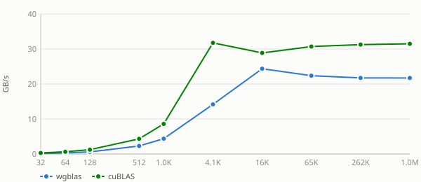
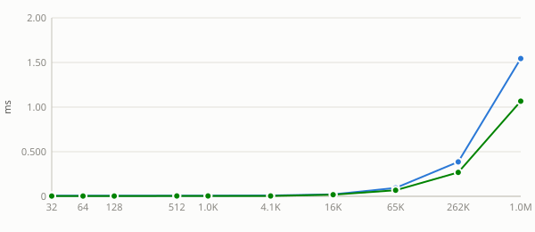
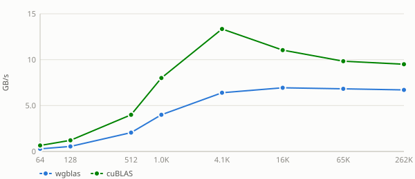
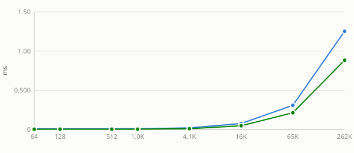
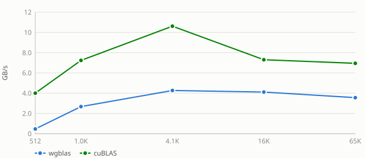
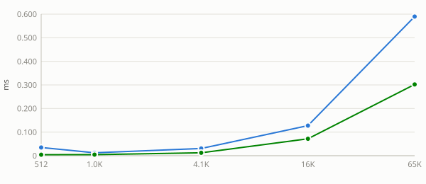
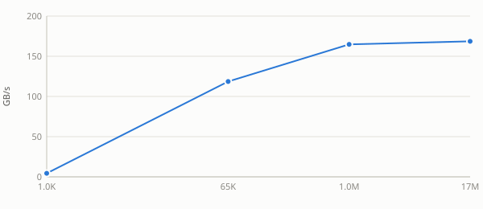
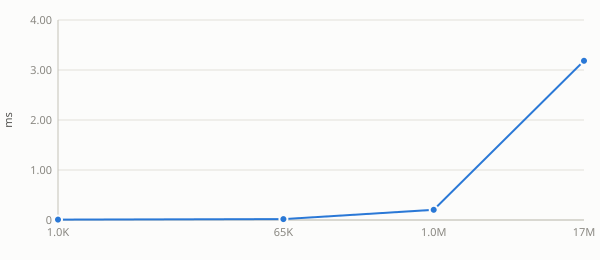
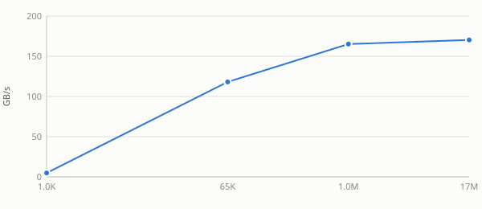

Unless noted otherwise, every result above uses unit stride (incx = incy = 1) — the normal case, and the coalesced, best-case GPU access pattern. Real usage sometimes passes a non-unit stride (e.g. operating on a row or column of a larger matrix, where incx = lda), which breaks memory coalescing and costs measurably more. This section sweeps a few representative strides to characterize that cost separately, collapsed below by default — expand a stride to see its table and chart.
stride.drot.c — CUDA / cuBLAS stride-sweep reference script
c sweep
The cosine half of the plane rotation, swept with s held fixed so the two halves are attributed separately. srot's kernel computes both outputs unconditionally, so a flat sweep is expected; a step at c = 0 or c = 1 would mean an identity case is being short-circuited, which BLAS does not promise.
cosine.drot.c — CUDA / cuBLAS c-sweep reference script
s sweep
The sine half of the plane rotation, swept with c held fixed — the counterpart to the cosine sweep. s = 0 makes the rotation an identity in exact arithmetic but is still fully computed and written, so a step there would indicate a short-circuit rather than a property of the maths.
Benchmark results for drot on Nvidia Geforce Gtx 1650.
Nvidia Geforce Gtx 1650 — wgblas vs cuBLAS
See also
Stride sweep
Unless noted otherwise, every result above uses unit stride (
incx = incy = 1) — the normal case, and the coalesced, best-case GPU access pattern. Real usage sometimes passes a non-unit stride (e.g. operating on a row or column of a larger matrix, whereincx = lda), which breaks memory coalescing and costs measurably more. This section sweeps a few representative strides to characterize that cost separately, collapsed below by default — expand a stride to see its table and chart.Nvidia Geforce Gtx 1650 — stride = 4
Nvidia Geforce Gtx 1650 — stride = 5


Nvidia Geforce Gtx 1650 — stride = 32
Nvidia Geforce Gtx 1650 — stride = 33


Nvidia Geforce Gtx 1650 — stride = 255


Nvidia Geforce Gtx 1650 — stride = 256
See also:
c sweep
The cosine half of the plane rotation, swept with
sheld fixed so the two halves are attributed separately.srot's kernel computes both outputs unconditionally, so a flat sweep is expected; a step atc = 0orc = 1would mean an identity case is being short-circuited, which BLAS does not promise.Nvidia Geforce Gtx 1650 — c = -0.75
Nvidia Geforce Gtx 1650 — c = 0
Nvidia Geforce Gtx 1650 — c = 0.5
Nvidia Geforce Gtx 1650 — c = 0.7071067811865476


Nvidia Geforce Gtx 1650 — c = 1
See also:
s sweep
The sine half of the plane rotation, swept with
cheld fixed — the counterpart to the cosine sweep.s = 0makes the rotation an identity in exact arithmetic but is still fully computed and written, so a step there would indicate a short-circuit rather than a property of the maths.Nvidia Geforce Gtx 1650 — s = -0.75
Nvidia Geforce Gtx 1650 — s = 0
Nvidia Geforce Gtx 1650 — s = 0.5
Nvidia Geforce Gtx 1650 — s = 0.7071067811865475

Nvidia Geforce Gtx 1650 — s = 1
See also: